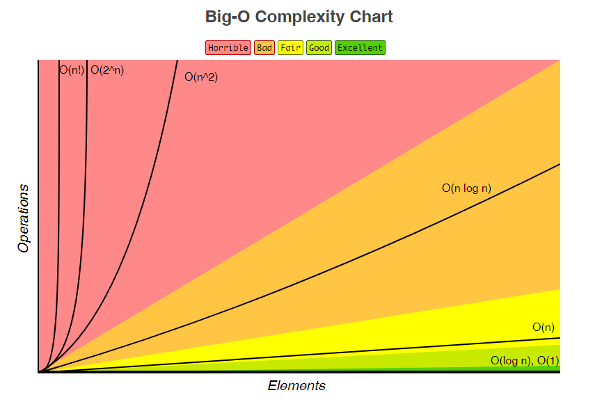

25/07/17
Big O Notation And Algorithmic Complexity
Big O Notation And Algorithmic Complexity
After completing the first section of the coding-interview-university repository, algorithmic complexity / big o / asymptotic analysis, I’ve decided to write a quick tutorial on how it all works. So hopefully it may come in handy as a quick learning tool or reminder for myself, or even another person who comes across this post at a later date.
Let’s begin…
What is this all about?
Big O notation and asymptotic complexity is all to do with how the number of operations an algorithm takes to complete, grows as the size of the input increases. For example, counting the number of characters in a string has a linear complexity — or O(n). This means that it takes n amount of operations to do, where n is the size of the string. It’s important to remember that Big O is not solely about the run time of a program, as there are many variables that can affect this (i.e if another program is hogging all of the memory it may take longer, or if a machine has a slower CPU). It is about the efficiency of the algorithm that is taking place.
Why is it important?
Algorithmic complexity may not seem that important to a programmer who is coding small command line applications that deal with small amounts of data, or who is just messing around with code. But in production software it is hugely important. To put this in to perspective: if we were to bubble sort a small list of 10 integers, in the worst case scenario it would take 100 operations, as the Big O of bubble sort is O(n²) . Now in a small program this wouldn’t make much of a difference but let’s say this program now is sorting test scores of an entire school where there are 2000 students. The awful performance will quickly become apparent as it will take 4000000 operations.
But what if the sort completes on the first iteration?
Now we have arrived at some more notations! The notation O() represents the worst case scenario of an algorithm. The notation for an algorithm’s best case scenario is Ω (Omega). Some operations have a constant best case scenario so it only takes 1 operation to complete (searching a hash table for example). There is also another notation, Ө (Theta). Big theta is when the worst case scenario and the best case scenario of your algorithm have the same complexity.
What are typical complexities?
I highly suggest you check out the original page where this chart is from. It lists many different complexities for loads of data structures as well as complexities for common sorting algorithms.
If you’d also like an explanation with a bit more discrete maths in it then have a look at these slides.
Here are also some Top Coder tutorials to complete: